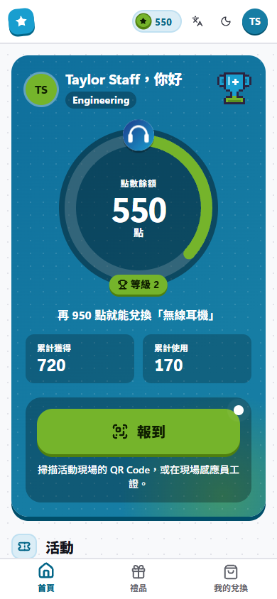
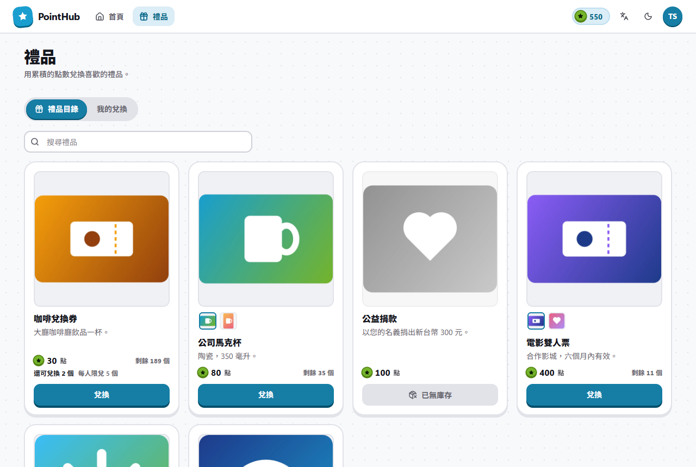
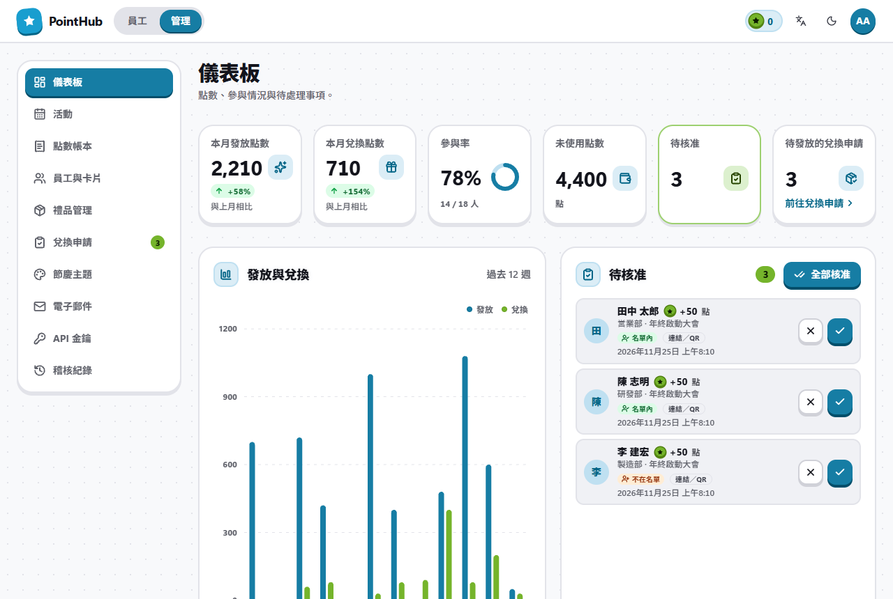

參加活動
活動管理員建立活動並設定點數；員工以 QR Code、員工證或人工輸入報到，線上活動可匯入完成名單。
★PointHub
設計提案簡報
員工活動點數集中管理平台
參加活動→累積點數→兌換禮品
→ 或 空白鍵 下一張 F 全螢幕
01 認識系統
活動管理員建立活動並設定點數；員工以 QR Code、員工證或人工輸入報到，線上活動可匯入完成名單。
每一筆發放、兌換與更正都寫入點數帳本，永不修改，餘額永遠對得上。
熱門禮品優先排列；兌換當下即扣點並保留庫存，發放後以電子郵件通知。
02 運作方式
設定點數、人數上限、報到與審核方式
QR Code、員工證、人工輸入或匯入名單
人工、名單內自動或全部自動核准
即時扣點並保留該項禮品
標記已發放，寄送電子郵件
每一步都留下紀錄：誰、何時、為什麼。
03 角色權限
一個人可以同時擁有多個角色，由系統管理員授予。
04 活動管理員・事前準備
新進員工加入後按重新比對即可，不必重新上傳
畫面與數字為示意。名單以員工編號比對，其次以電子郵件。
05 活動管理員・現場報到
固定連結印在海報上；動態報到碼在會場螢幕每 30 秒更換，轉傳的照片很快失效。另有投影用的全螢幕模式。
入口放一台接讀卡機的筆電：感應一下就顯示姓名並立即發放點數。支援 USB 鍵盤式與 PC/SC 讀卡機。
忘記帶員工證、或卡片尚未登記的人，由活動管理員輸入員工編號，立即核准。
QR Code 倒數為加速示意。
06 活動管理員・即時計點
07 活動管理員・線上活動
視訊會議、線上課程或問卷工具的完成紀錄，只要有員工編號或電子郵件。
逐列比對員工主檔；新進員工加入後可重新比對。
一個按鈕：記錄出席（名單匯入）並發放活動的點數。
點數寫入點數帳本，每個人收到電子郵件；略過的列附上原因。

08 一般員工
09 畫面設計
依台灣節慶行事曆自動切換配色、像素風圖案與背景動畫。農曆節日由系統逐年計算，不需要維護時程表。
系統管理員可略過某個節慶，或強制指定主題（例如公司週年慶）。
10 禮品

11 點數帳本
表中為示意資料。
12 管理介面

13 擴充性
points:read查詢點數points:write加點・扣點employees:write員工資料路徑前綴 /api/integration/v1。每個系統各自一把金鑰，只開放需要的權限。
14 串接方式
POST /api/integration/v1/transactions X-Api-Key: phk_•••••••••••• { "employeeNo": "102358", "amount": -60, "reason": "員工餐廳：午餐", "externalReference": "POS-1127-0042" } ← 201 Created 已扣 60 點，寫入點數帳本 // 網路斷線，機台重送同一筆… ← 200 OK 回傳原交易，不會再扣一次
15 系統架構
16 下一步